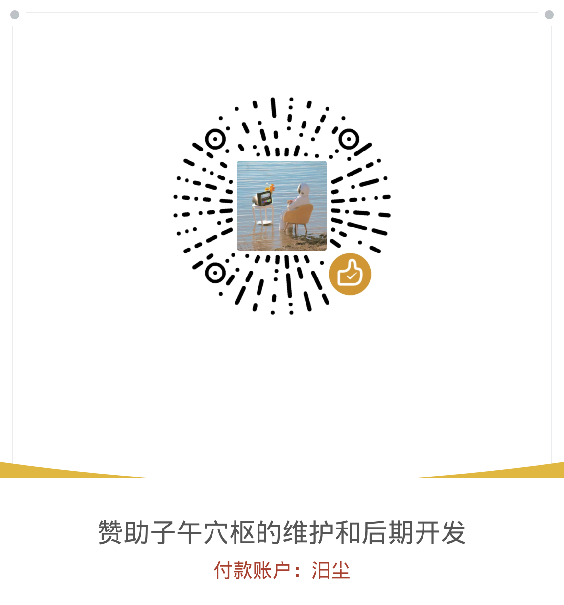

枢
子午穴枢
按时取穴 · 更新日志与安装包

子午穴枢
灵龟八法 · 飞腾八法 · 子午流注 · 五运六气
v1.2.5 · 2026-10-29
安装包请以浏览器下载；各版使用同一签名，可直接覆盖升级。首次安装需在系统设置中允许「未知来源」。
当前为应用内离线页，安装包请到在线更新站下载。
更新日志
累计 8 个版本v1.2.5最新
2026-10-29 · 166 KB站点迁移 · 关于置顶
- 发布站迁移至新账号站点：shixuncn.github.io/ziwushuxue，应用内「更新日志 · 安装包」与「检查更新」均指向新站点。
- 「说明」页把「关于」卡片提到最上面，打开即见当前版本、联系方式与更新入口。
- 站内联系与仓库地址统一更新为 shixuncn/ziwushuxue。
- 计算逻辑与离线能力不变，覆盖安装即可。
v1.2.4
2026-10-28 · 158 KB底部黑边彻底修复
- 改用「全屏 + 纸色占位」方案：状态栏、导航栏区域各用一块与页面同色的视图精确占位，网页只排在其中间，栏区不再露出黑底。
- 系统栏保持透明、图标深色，并关闭系统自动叠加的半透明对比遮罩；即使机型强制边到边，导航栏区域也是纸色。
- 窗口、根布局、WebView 三层底色统一为纸色，冷启动不再闪黑。
- 仍不改变计算逻辑，离线可用；覆盖安装即可。
v1.2.3
2026-10-28 · 157 KB黑边根治 · 流畅度优化
- 黑边：取消强制边到边，系统栏统一纸色配深色图标，关闭系统自动加的半透明对比遮罩；窗口、WebView 与页面底色全部改为纸色，启动不再黑闪。
- 黑边：网页补 env(safe-area-inset-top/bottom) 内边距，即便个别机型强制边到边，内容也不会被状态栏或手势条压住。
- 流畅度：五个标签页改为惰性渲染，启动只计算当前页，切页即绘；检索索引改为首次进入检索页才构建。
- 流畅度：底部导航去掉毛玻璃实时模糊（WebView 上最耗性能的一处），改实色纸白；切页改为即时回到顶部，滚动更稳。
v1.2.2
2026-10-28 · 157 KB子午流注置顶 · 接入在线更新站
- 首页「此时」重排：子午流注纳甲 / 纳子提到最前，灵龟八法、飞腾八法随后，常用针法一眼即得。
- 「关于」的更新日志入口改为在线更新站（HTTPS），可直接打开网页版与下载各版安装包。
- 「检查更新」改为联网读取线上 releases.json，失败时自动退回内置版本表，离线仍可用。
- 界面细修：新增分区标题、卡片标题与徽章间距统一，摘要条顺序随主卡调整。
v1.2.1
2026-10-28 · 153 KB黑边修复 · 独立更新站
- 修复安卓端黑边：状态栏与导航栏统一为纸色，全面适配 Android 11–16 的边到边显示，顶部标题不再被状态栏压住。
- 更新日志升级为独立静态站点：可在线「打开网页版」、下载每一版安卓安装包。
- 安卓应用声明网络权限，供后续在线检查更新；其余计算仍全部在本机完成。
- 安装包改用 ASCII 文件名（ziwu-xueshu-v1.2.1.apk），浏览器下载不再出现乱码。
v1.2.0
2026-10-28 · 153 KB关于页与更新日志
- 新增「关于」页：当前版本、版本特点、更新时间、联系方式，仿设置页版式。
- 新增更新日志页（静态），收录每一版安装包与更新内容。
- 灵龟八法新增「日干支 / 时干支代数歌」与甲子日甲子时算例（35 ÷ 9 余 8 → 艮宫内关）。
- 「检查更新」可对比内置版本号，联网时读取 releases.json 提示新版本。
v1.1.0
2026-10-28 · 145 KB子午流注深化
- 纳子法新增「不虚不实 / 补泻时已过 → 取本穴」，并标出母穴补时、子穴泻时。
- 新增《纳支法补母泻子取穴表》：十二时辰 × 母穴补时 / 子穴泻时 / 本穴 / 原穴，当前时辰高亮。
- 纳甲法新增开穴规则六条：阳进阴退、经生经穴生穴、返本还原、日干重见、合日互用、癸日涌泉亥时。
- 说明页「四、子午流注」重写：子午与流注释义、纳甲五法、纳子三法。
v1.0.0
2026-10-28 · 145 KB首个正式版
- 灵龟八法、飞腾八法、子午流注（纳甲 / 纳子）、五运六气四法按时推算。
- 五腧穴、焦氏头皮针、眼针、脐针、董氏奇穴（十二部位 223 穴）速查。
- 全文检索、原文经典、离线可用、可安装为 PWA 与安卓 App。
本页是 子午穴枢 App 的唯一权威发布网站。
每一版安装包、在线网页版、更新日志都在这里。其他任何渠道的同名站点或安装包均非官方。
问题反馈可以：
子午穴枢软件 QQ 群号 1132558598，进群验证请详细写清，或 →
1784035058@qq.com
隐私政策：
本作者所有的 App 都不涉及隐私；不会读取手机里任何信息，也不需要任何权限（仅联网检查更新时需要网络）。
声明：
子午穴枢 App 是作者的一个个人业余项目，利用业余时间开发，属于公益项目，终生免费、无广告。
因并不盈利，若有心资助本项目，可联系作者 QQ：1784035058@qq.com（昵称：祈念）。
另有赞助链接在网页最下方处。
赞 助 本 项 目

微信扫描二维码即可赞助，付款账户：汨尘
本程序仅供学习与临床参考，针刺操作须由执业医师完成。
© 子午穴枢 · 全线离线计算，不上传任何数据
© 子午穴枢 · 全线离线计算，不上传任何数据